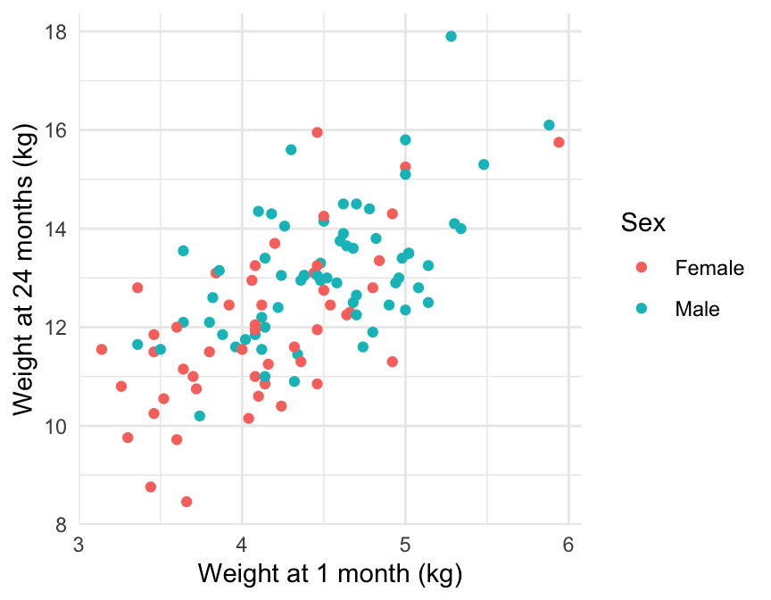

Pro Skills Group Project
Exploratory Analysis
Figure 1 shows the relationship between the child’s weight at 24 months against the child’s weight at 1 month. From Figure 1 it appears that there is a positive, moderate to strong linear relationship between a child’s weight at 24 months and weight at 1 month. Moreover, with the exception of a few points there appears to be a distinction by gender with female children having lower weight and male children having a higher weight.
| term | Wt1 | Wt24 | Solids |
|---|---|---|---|
| Wt1 | 1.00 | 0.56 | −0.13 |
| Wt24 | 0.56 | 1.00 | −0.07 |
| Solids | −0.13 | −0.07 | 1.00 |
| term | Wt1 | Wt24 | Solids |
|---|---|---|---|
| Wt1 | 1.00 | 0.64 | −0.23 |
| Wt24 | 0.64 | 1.00 | −0.37 |
| Solids | −0.23 | −0.37 | 1.00 |
Table 1 shows the correlation between numerical variables for male and female children. From Table 1 (a) we can see that for males Wt1 and Wt24 are moderately, positivly correlated, whereas Solids against Wt24 and Wt1 are weakly negatively correlated. Table 1 (b) highlights that this is slightly different for female children as there appears to be a higher positive correlation between Wt24 and Wt1. Additionally, there appears to be a moderate negative correlation between Solids and Wt24 for female children and a weak-moderate correlation between Solids and Wt1. This suggests that there may be an interaction between Wt1 and Solids by Sex.
| Sex | Wt24 | Wt1 | Solids | ||||||
|---|---|---|---|---|---|---|---|---|---|
| Mean | Median | Std.Dev | Mean | Median | Std.Dev | Mean | Median | Std.Dev | |
| Male | 13.12 | 13.03 | 1.35 | 4.51 | 4.51 | 0.52 | 11.50 | 11.00 | 3.18 |
| Female | 11.94 | 11.85 | 1.59 | 4.11 | 4.08 | 0.55 | 11.43 | 12.00 | 2.91 |
Table 2 shows the mean, median and standard deviation of Wt24, Wt1 and Solids by Sex. Table 2 highlights that there appears to be a slight difference between Wt24 by sex. There does not appear to be a difference in Wt1 and Solids by sex.